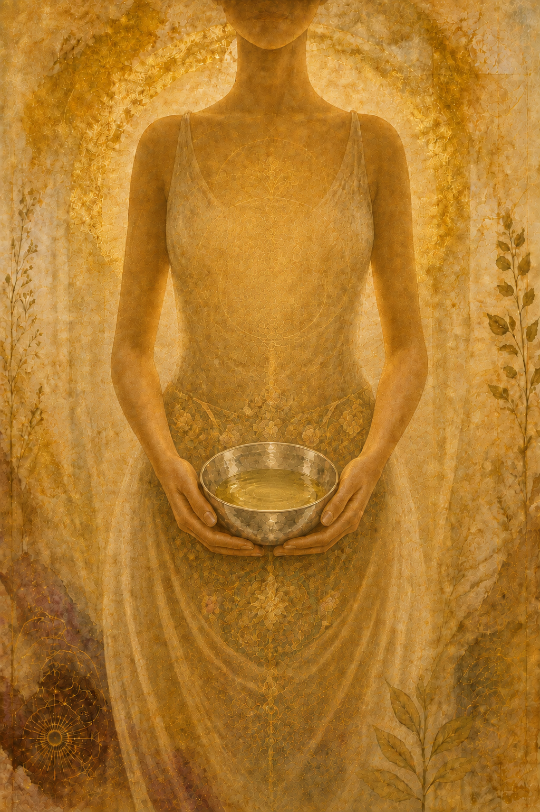
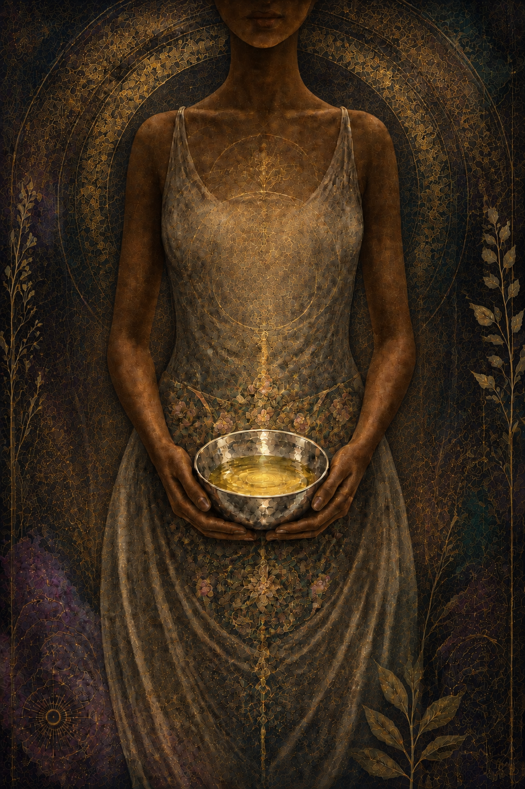

The Living Archive · Chapter VI
Shivambu
The beginningis the name.


Language shapes what is possible
A New Name for a New Relationship
The familiar word for this substance rarely arrives alone.
It carries clinical distance, cultural disgust, and a conclusion made before the question can open. Language shapes the relationship that becomes possible.
Other names hold other doors.
Śivāmbu joins śiva — auspicious, beneficent, also the name of Śiva — with ambu, water. It is commonly received as the water of Śiva. The name appears in the Śivāmbu Kalpa Vidhi preserved within the Damar Tantra, where the practice is presented as a dialogue between Śiva and Pārvatī.
Amarolī is the yogic name for the practice. It carries the Sanskrit root amara: deathless or immortal. The word belongs to a language of return, continuity, and transformation.
Pūtimutta is the Pali term commonly translated as fermented urine. The Buddhist monastic code preserves pūtimuttabhesajja — fermented urine medicine — among the supports permitted to an ordained practitioner. The record matters because it places the substance inside an established discipline rather than outside respectable life.
Other phrases gather around the same field: the golden fountain, living waters, eau d'or. Alchemical terms such as aqua vitae and mumia belong to related histories of vital water and bodily substance, though they are not simple synonyms for Shivambu.
I use Shivambu because the name leaves the relationship open.
Living waters travels gently in conversation. Each name changes what can be heard.
Formation, not meaning
What Is in the Jar
Urine begins with the filtration of blood. In the nephron, water and small solutes pass from the glomerular capillaries into a plasma ultrafiltrate. The renal tubules then alter that filtrate extensively: most water and many useful substances are reabsorbed into circulation, while other substances are secreted into the tubule. The remaining fluid becomes urine.
This is more precise than calling the fluid blood, or treating it as an untouched image of blood. It is a material shaped through filtration, reabsorption, secretion, and concentration.
Its composition still carries information. Pregnancy tests work because human chorionic gonadotropin can be detected in urine. Medicines and their metabolites may also be excreted there. Hydration, food, medication, time of day, and the body's present condition can all change what appears in a sample.
The physiological description establishes formation, not meaning. Meaning enters through relationship and observation.
In my own record, the jar became a way of meeting change that the body had already processed. Colour, clarity, scent, and concentration varied from day to day. I learned to read those differences as part of one body's continuing record, without making them diagnostic signs or universal instructions.
Within an Āyurvedic frame, I understand that variation through qualities such as agni, doṣa, and ojas. This is an interpretive language I bring to the practice. It sits beside the anatomy without pretending to be the same kind of account.
How one lineage held it
The Traditional Beginning
The translation of the Damar Tantra held in this archive gives a specific beginning. Verses 6 and 7 describe the early-morning, intermediate stream. Verse 10 describes receiving it willingly and cheerfully. These are the instructions of the historical text, not medical guidance from this archive.
What stayed with me was the quality of the encounter. The practice was not framed as an act of punishment or disgust overcome by force.
It asked for willingness.
My own beginning belonged to that threshold. A vessel, a quiet morning, a deliberate turning toward something my culture had taught me to reject. The first act was relational before it was technical.
This is why I keep the traditional description in the record. It shows how one lineage held the beginning. It does not establish a rule for another person's body.
No timetable
Many Ways of Arriving
The practitioner accounts around me do not form a single progression. Some relationships began with contact on the skin. Some began with a taste. Some moved directly into an internal practice. Others remained at the threshold for months or years.
My own understanding grew through continuity. Familiarity changed the encounter. What had first carried the force of a cultural taboo became an ordinary part of daily attention.
There is no timetable in this archive. The point is not how far or how quickly a practice develops. The point is that each beginning belongs to the person living it.
Privacy is not always shame
The Social Reality
Many practitioners carry Shivambu privately. Some have not spoken about it with family or partners. The silence is not always shame. Sometimes it is the boundary that allows a new relationship to form before it has to survive another person's reaction.
A private practice can be whole. Many intimate acts of attention are never made public and lose nothing by remaining unwitnessed.
This is one reason the names matter. Shivambu, living waters, and the golden fountain create room for conversation without forcing disclosure before trust exists.
Practitioner communities create another kind of room: spaces where experience can be spoken before the premise itself has to be defended. Their value lies in the quality of witness, not in replacing personal discernment.
Mother Spirit is the public threshold for the currently tended community spaces. The details of those spaces can change; the threshold remains.
Variation as record
What Varies
The character of the fluid changes with hydration, food, medication, time of day, sleep, illness, hormonal cycles, exertion, and season. In my record, no sample stands outside the life that produced it.
Over time, variation became part of the observation. Colour, clarity, scent, taste, and the response of the skin belonged to the record of that day. They were not errors to eliminate, nor conclusions about health.
Practitioners around me live with different diets and different conditions. No single diet defines the practice. The shared element is simply the return to a relationship with the body's own fluid, sustained in whatever form each person has chosen.
Not a required destination
Where This Leads
Amarolī may remain a simple daily practice. Many practitioners never distil, never adopt the dietary conditions documented elsewhere in this archive, and never enter its more technical work. Their practice is not incomplete.
The wider archive records other forms: aged material, topical preparations, household uses, and the histories gathered around them. Those belong in the Amaroli Protocols, where their operational and historical claims can be reviewed separately.
Distillation became a deeper layer of my own work. It separated the fluid into fractions and made visible qualities that had previously remained together. That direction grew from practice and curiosity. It is part of this record, not a required destination.
The relationship beginsbefore the method.
Personal observation and community record. This chapter describes one practitioner's relationship and the traditional sources that informed it. It is not medical guidance or a protocol.
Source notes
- Damar Tantra, Śivāmbu Kalpa Vidhi. Verses 6 and 7 give the early-morning, intermediate stream: “Such a trained man gets up in the early morning when three quarters of the night has passed, stands facing the east and passes urine” and “The first and concluding flow of the urine is to be left out, and the intermediate flow of urine is to be collected. This is the best method.” Verse 10 gives the manner of receiving: “Afterwards one should drink one's own urine quite willingly and cheerfully.” Checked against the translation held in the archive bibliography. The dating and textual history of the Damar Tantra are not settled, and this archive does not claim to settle them; the verses are cited as what one lineage recorded, not as a dated document.
- Vinaya Piṭaka, Mahāvagga I.30.4. Pūtimuttabhesajja — rendered as medicine consisting of putrid urine — is the fourth of the four nissāya, the resources declared to a monk at ordination: “Medicine consisting of putrid urine is a trifling thing, easily obtained and blameless.” The Bhesajjakkhandhaka, Mahāvagga VI (“On Medicaments”), is a separate provision concerning cow's urine in a decoction for jaundice (VI.14.7); the two are related but should not be merged.
- National Institute of Diabetes and Digestive and Kidney Diseases, “Your Kidneys & How They Work,” for filtration, tubular reabsorption, secretion, and urine formation.